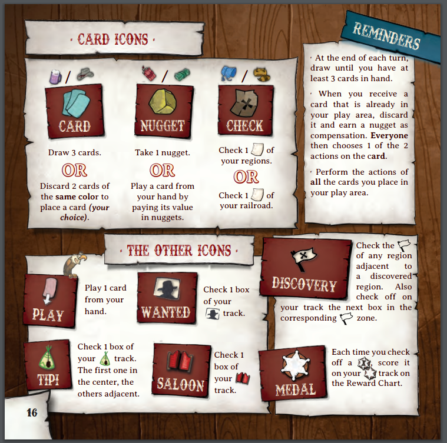

Colorado
Board Game Arena 官方规则文档
Player Aid:

Overview
Explore the roadmap to Colorado and gain the most valuable Sherriff Badges you can obtain
Turn
The turn consists of 3 parts
Call
Action
End
Call
The player with the Call token picks an opponent and declares a card (value and colour) they want from them
Step 1
If the opponent has this card, they hand it over
If the opponent has cards of either the suit or value declared, they choose one from these to hand over
If the opponent has nothing the Caller wants, a random card is handed to the Caller from the Opponent's hand
Step 2
If the card received is not in the Caller's play area, they add it to it
If the card received is in the Caller's play area, they discard it and take a gold nugget
Step 3
Check the card, played or discarded, to see what actions are available in the Action phase
Action
All players take one of the two possible actions depicted on the card given to the Caller
If an action triggers another action, only the player who triggered it gets to perform the bonus action
Once all players have finished any actions or bonus actions, move on to End
End
Check to see if anyone has values 1 2 and 3 in one colour
If a player does, they discard all three and marks the flag in a region adjacent to a region which they already hold a flag. (Note: Mountains prevent adjacency.) Then, on the rewards track, mark the first empty box in that area.
This is repeated until no player has a 1-2-3 in any colour
After which, all players draw up to 3 cards if they had less than 3
If anyone has the 7th badge on their track, this ends the game! Otherwise, the caller token is passed leftwards, and a new round begins
Cards and Actions in Detail
There are 6 colours:
Red Dynamite and Green Money link to the Nugget Action
Grey Hats and Purple Beer link to the Card Action
Blue Hoods and Orange Fur link to the Check Action
Nugget Action - EITHER Take one Nugget OR Play a card by paying its Nugget Cost (top left) so 1 or 2 or 3
Card Action - EITHER Draw 3 Cards OR Discard 2 Cards of the same suit to play another card
Check Action - EITHER Tick off a Region Leg connected either to another Leg or a flag OR Tick off a Railroad Leg which matches a previously ticked off Region Leg, when you reach a junction keep going on just one the other is now blocked for you
Roadmap in Detail
This is made up of 3 main features Flags, Legs (look like bits of paper) and connected paths (dashed lines)
Legs MUST be connected to either other Legs or Flags to mark them
A Leg can NOT be marked if the Flag of that region has not yet been marked
To mark a Flag, an adjacent region (not blocked by mountains) must also have its flag marked
When you mark a Leg, immediately gain its benefit, which mostly relate to the normal actions as described above or could progress you on one of the icons on the lower part of the Rewards Track
The icon on the lefthand pale poking out parchment shows your player icon (Fire, Wheel, Horseshoe, Barrel)
The flag colours indicate what that region is generally good at, without having to analyse it in detail
Red Flag Towns are starting areas
Green Flag Forests have a good balance of Points and Legs
Yellow Flag Deserts are high in points but low in Legs
Blue Flag Lakes are high in Legs and low in Points
A region's points are earned once all flags and legs in that region are marked
Rewards Track in Detail
The Rewards Track is shared amongst players, with each player having their own line on each section (Fire, Wheel, Horseshoe, Barrel)
Other than the Tipi Track, all other sections are completed from furthest left to furthest right
When you discover a region, progress on the matching colour flag track
The first player(s) to finish a colour flag's track in the same turn gain its completion points, anyone in a later turn does not
When you gain points, write the number in the sheriff badge track
The Tipi track starts with the centre box being marked on the first reward, then it's your choice whether you travel left or right, and can go in the opposite direction at a later point, view the icon at the top of the Tipi track to see what immediate benefit you gain
The Wanted Poster track has an immediate reward ONLY on the second entry
The Tipi, Wanted, and Saloon tracks have a first and second arrival points reward (Tipi has arrival rewards for both left and right ends)
Game End
The game ends when a player has put a value in their 7th Sheriff Badge (note that this is the badge close to the end of the track, but not the final three)
Each of your Flag Tracks will give you points in the furthest column you have reached
The Sheriff Badges are added up and scored
The player with the most points wins
If a tie, the player with the most Sheriff Badges in quantity NOT value wins
If still a tie, the player with the most Golden Nuggets wins